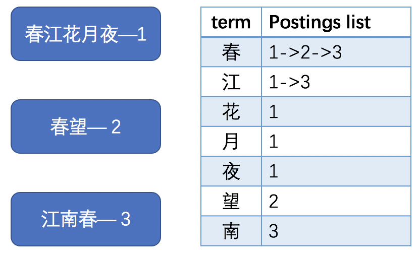
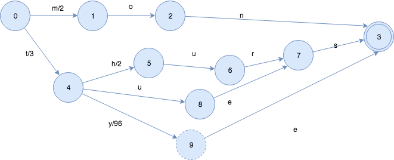

# VScode插件开发 ## 信息检索概述 分享人：张心睿
## 先来尝试一下 制作你的第一个VScode插件
安装 Yeoman 和 VS Code Extension generator ``` npm install -g yo generator-code ``` 用于根据模板自动生成VScode插件项目
生成一个模板项目 ``` yo code # ? What type of extension do you want to create? New Extension (TypeScript) # ? What's the name of your extension? HelloWorld ### Press <Enter> to choose default for all options below ### # ? What's the identifier of your extension? helloworld # ? What's the description of your extension? LEAVE BLANK # ? Initialize a git repository? Yes # ? Bundle the source code with webpack? No # ? Which package manager to use? npm code ./helloworld ```
运行 在VScode中打开新建项目后按F5运行 <img src="./img/1.png">
试用一下吧 打开命令搜索框，输入hello world <img src="./img/2.png"> 回车 <img src="./img/3.png">
让我们来看一下这个插件是怎么实现的 目录结构 ``` . ├── .vscode │ ├── launch.json // 插件加载和调试的配置 │ └── tasks.json // 配置TypeScript编译任务 ├── .gitignore // 忽略构建输出和node_modules文件 ├── README.md // 一个友好的插件文档 ├── src │ └── extension.ts // 插件源代码 ├── package.json // 插件配置清单 ├── tsconfig.json // TypeScript配置 ```
package.json <img height="480" src="./img/4.png">
extension.ts <img height="480" src="./img/5.png">
## VScode 插件功能
<img height="700" src="./img/VScode插件.png">
## VScode插件系统
<img height="700" src="./img/7.jpeg">
<img height="500" src="./img/命令系统.jpg">
## 信息检索概述
1. 数据采集 2. 建立倒排索引 3. 计算相关度 4. 排序
## 数据采集 1. 爬虫/人工收集数据 2. 数据清洗(如去除空数据、脏数据等) 3. 构建停词表、叙词表 <a href="https://github.com/goto456/stopwords">中文常用停词表</a> 叙词表——同义词表 <img height="320" src="./img/8.jpeg">
## 建立倒排索引 
更高效地搜索term——FST  <a href=“https://www.shenyanchao.cn/blog/2018/12/04/lucene-fst/”>拓展阅读</a>
优化postings list空间占用 <img height="400" src="./img/12.jpeg"> <img height="400" src="./img/13.jpeg"> <a href="https://www.elastic.co/cn/blog/frame-of-reference-and-roaring-bitmaps">拓展阅读</a>
Term index & term & postings list <img height="480" src="./img/11.png">
计算相关度 * \begin{aligned} 词频：tf_{t \in d} = \sqrt{frequency} \end{aligned} * \begin{aligned} 逆向文档频率：idf_{t} = 1 + log(\frac{numDocs}{docFreq + 1}) \end{aligned} * \begin{aligned} 字段长度归一值：norm_{d} = \frac{1}{\sqrt{numTerms}} \end{aligned} <small>frequency：词在文档中出现的次数 numDocs：索引中文档数量 <br/>docFreq：包含该词的文档数 numTerms：字段词数</small>
\begin{aligned} score_{q,d} = coord_{(q,d)} * \sum_{t \in q}{tf_{t \in d} * {idf_t}^2 * getBoost() * {norm_{(t,d)}}} \end{aligned} coord：文档中包含查询词数/查询词总数 getBoost()：设定参数
## 排序 前k个最符合查询条件的文档 最大堆/最小堆实现 对于大多数查询，前20条即可满足用户需要
## Code Search插件 elastic search + kibana 结合VScode插件开发方式